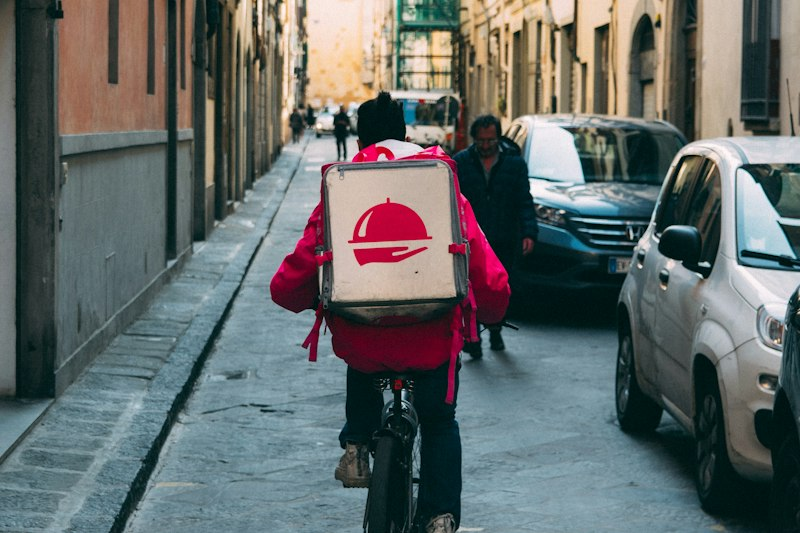

The Pursuit of Pure Flavor
We founded Srestaurents with a quiet commitment: to refuse culinary shortcuts, to cook over real charcoal embers, and to honor the heritage of Indian dining alongside contemporary pan-Asian balance.
Where ancient smoke meets mindful dining
In a dining world increasingly dominated by commercial pastes and reheated sauces, Srestaurents returned to the fundamental principles of slow cooking.
Our roots are planted in the royal bawarchikhanas of Awadh, Lucknow, and Old Delhi. We studied the historic manuscripts of Dum Pukht — the technique of sealing heavy copper handis with wheat dough so that gentle steam tenderizes meats and infuses every grain of basmati with saffron and whole cardamom.
To complement these rich, slow-simmered gravies, we curated an agile Pan-Asian wok repertoire. The sharp, vibrant notes of kaffir lime, crispy lotus roots, and bamboo-steamed dim sums provide the perfect refreshing counterpoint to traditional Indian feasts.

Our Sourcing Commitments
We trace our ingredients back to ethical farms, traditional orchards, and single-origin spice groves.
A2 Cultured Bilona Ghee
Slowly churned from grass-fed indigenous cows' curd using traditional wooden churners. Delicate, nutty, and completely free of chemical additives.
Hand-Pounded Mountain Spices
Single-origin black pepper from Tellicherry, wild Kashmiri saffron threads, and organic yellow mustard seeds crushed on granite slabs daily.
Charcoal & Sweet Mango Wood
We burn sustainable hardwood and sweet mango charcoal inside our earthen tandoors to produce natural wood smoke without bitter gas fumes.
Meet the Culinary Leadership
Our kitchen is led by masters dedicated to preserving ancestral techniques.
Master Chef Vikramaditya
Executive Chef · Awadhi & TandoorWith over twenty-two years spent perfecting regional dum styles in Lucknow and Hyderabad, Chef Vikramaditya safeguards our 24-hour dal and biryani recipes.

Chef Ananya Sharma
Pastry Chef & ConfectionerTrained in classical halwai arts and modern pastry, Chef Ananya crafts our slow-fried gulab jamuns, saffron rabris, and botanical kokum shikanji cordials.
Moments from the Dining Room


Experience Srestaurents in Person
We invite you to savor our culinary creations. Reserve a table in our courtyard or order online for delivery.